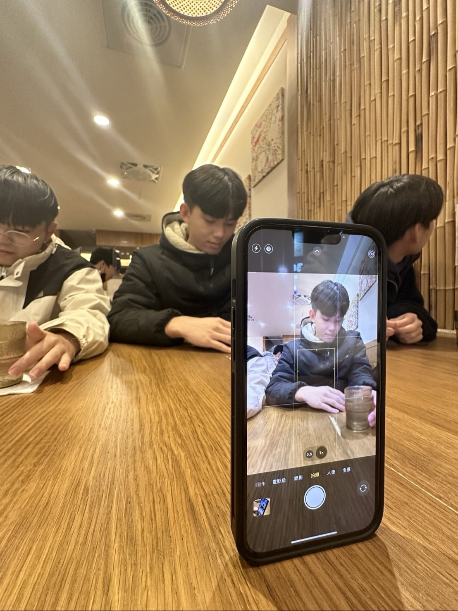
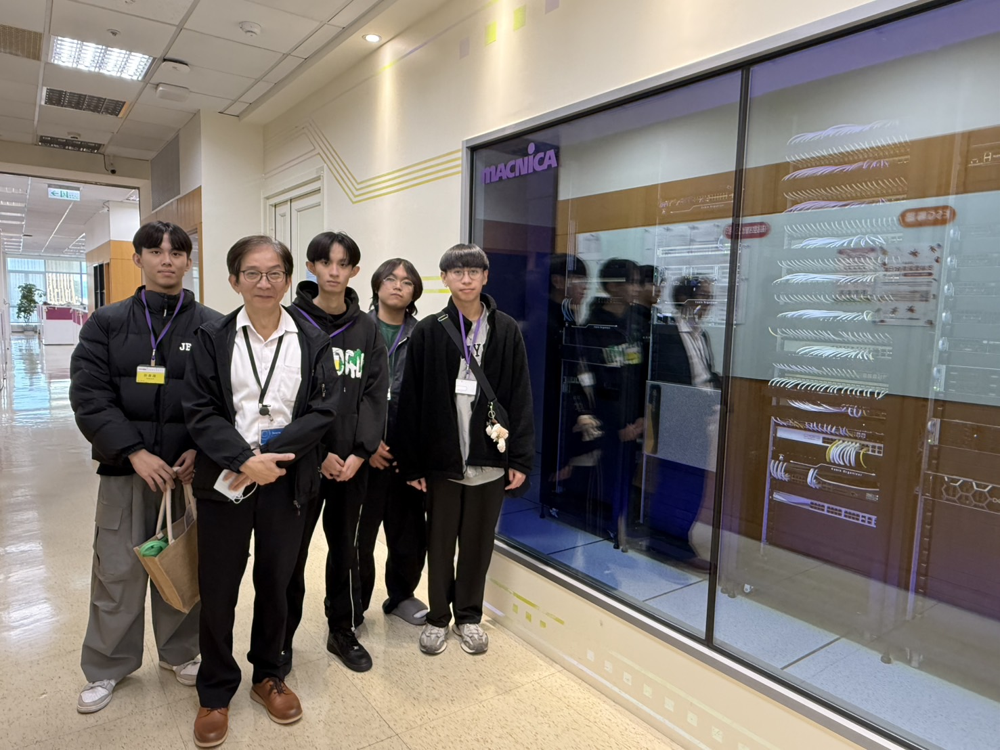
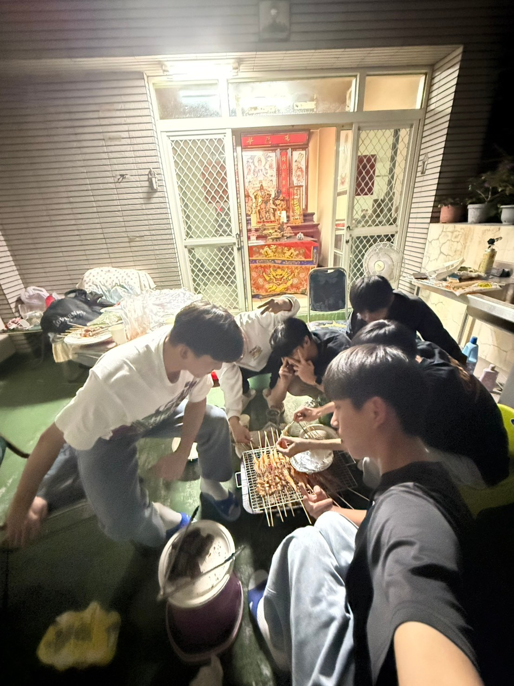
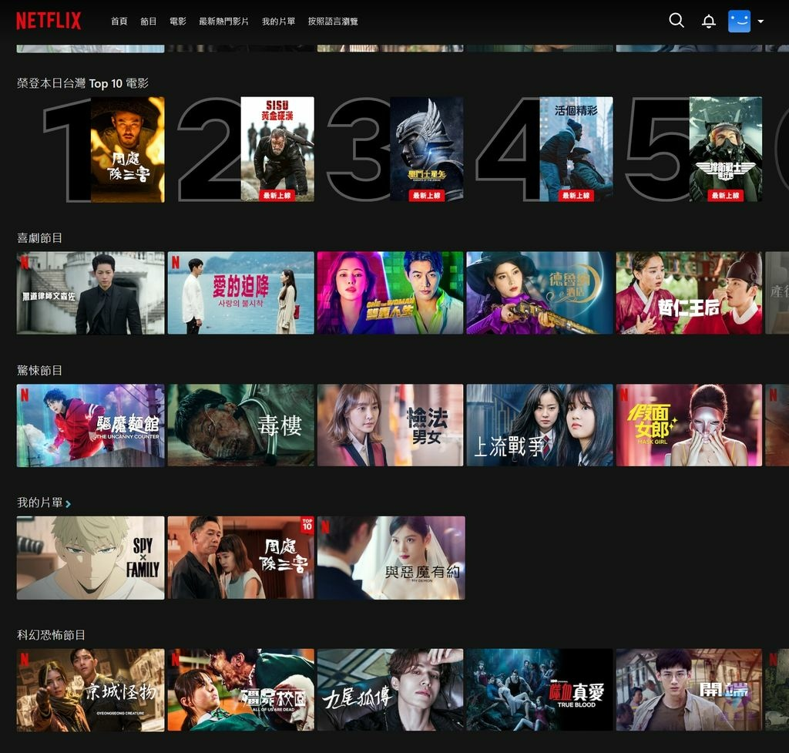
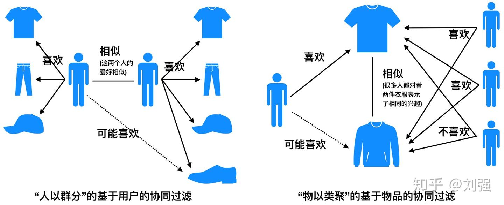

擁有高職體系的實務背景，讓我在進入大學後更懂得將理論與軟體實作結合。平時的興趣是打麻將和打羽球，目前的短期目標是把程式能力的基礎先練好，而長遠的目標則是看未來能不能考上不錯的研究所，繼續在資訊領域深造！
在課堂與專案中實際運用過以下技術，具備基礎的開發與問題排解能力：
結合硬體背景與資管實務，對於系統建置與企劃發想有一定的理解：
目前主要聚焦於全國性競賽企劃，將資訊管理理論與現代人痛點結合，轉化為實際的科技應用提案。
針對社會高齡化加速，失智風險族群增加的問題，打造整合語音互動、情緒辨識、雲端分析的虛擬陪伴 AI，提供情感支持與健康輔助。
客製化情感互動：透過數位介面提供情感互動，支援設定熟悉的音色與生活影像，轉化為個人專屬動態生成內容。
主動式情境感知與認知刺激：依習慣播放內容、提醒任務、喚起記憶刺激認知。透過語音主動引導長者喚起過往記憶。
採模組化架構，包含：
1. 感測層：蒐集互動與作息資料。
2. AI處理層：NLP生成個人回應、情緒感測依習慣。
3. 雲端分析層：分析語言情緒作息、大數據預防照護。
訂閱服務：針對個人化對話互動、健康提醒、家屬遠端通知與專業認知訓練課程，採月費/年費制。
機構合作/加值授權：與醫療/長照社福單位合作，提供機構專屬管理平台與去識別化數據服務。
補足無人陪伴時段，減少長者孤單感；透過日常語音互動刺激與生活提醒延緩認知退化；並偵測行為與情緒變化，協助及早介入照護。
參與專案發想與核心企劃撰寫，從資訊管理的角度切入，評估 AI 技術導入應用場景的規劃與服務設計。
日本旅遊

2025 企業參訪

跨年烤肉
2026-06-20 | 科技觀點與資訊應用
許多人常批評推薦演算法會造成資訊同溫層，但我認為，演算法其實是這個資訊爆炸時代中最偉大的發明之一。現在每天有數萬首新歌發布、無數部影視作品上線，如果沒有演算法的輔助，我們光是搜尋想看的內容就會找太久，更何況有些人是選擇困難。當我打開音樂串流平台，系統能自動知道我可能會想聽誰的歌，或是播放我上次聽到一半的音樂，這種無縫接軌的聆聽體驗，大幅降低了搜尋成本，讓科技真正服務於生活。

▲ 透過精準推播，我們能更有效率地獲取符合自身品味的內容。
從資管的技術角度來看，串流平台使用的協同過濾機制，其實充滿了社群共創的智慧。系統不只是記錄個人的點擊，更是將數百萬名擁有相似品味的用戶連結起來。

▲ 協同過濾機制透過大數據，建立起跨越地理限制的品味連結。
我們不需要過度恐懼被演算法「綁架」。因為在每一次的點擊、按讚或跳過播放中，我們其實都在訓練這套系統，讓它變得更懂我們。
演算法就像是一位不會累的人，從無邊無際的數據庫中替我們篩選出最有價值的資訊。身為數位時代的公民，與其抗拒它，不如學會善用它，透過主動建立良好的數位軌跡，讓演算法成為提升生活效率的幫手。